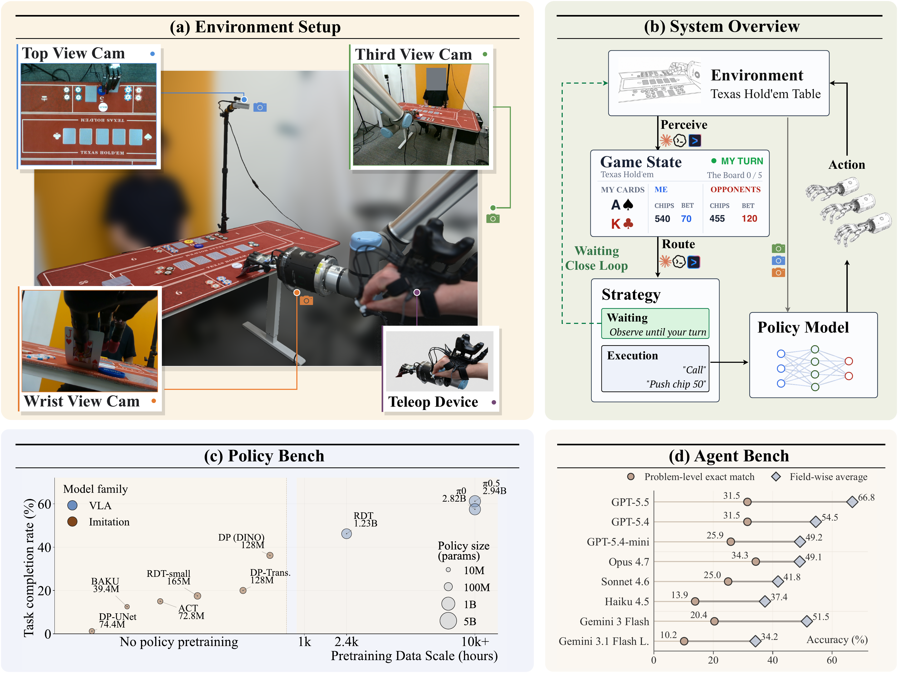
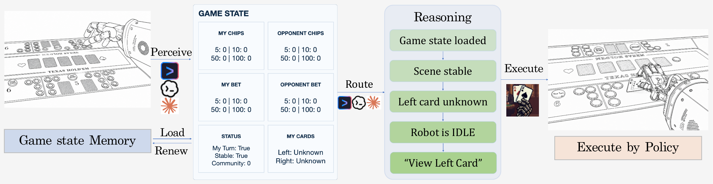
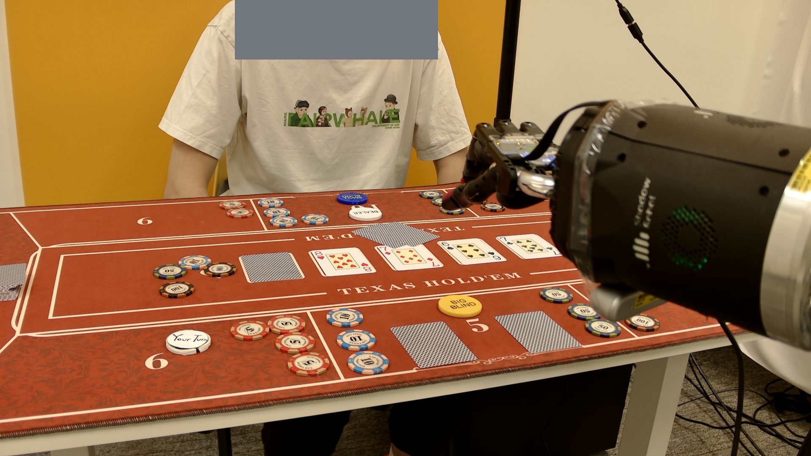
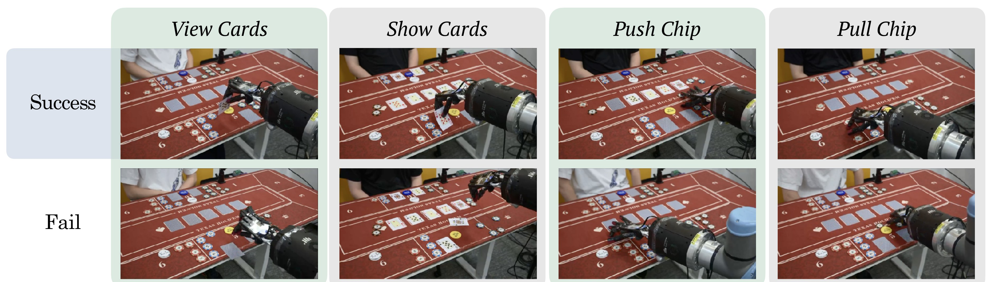
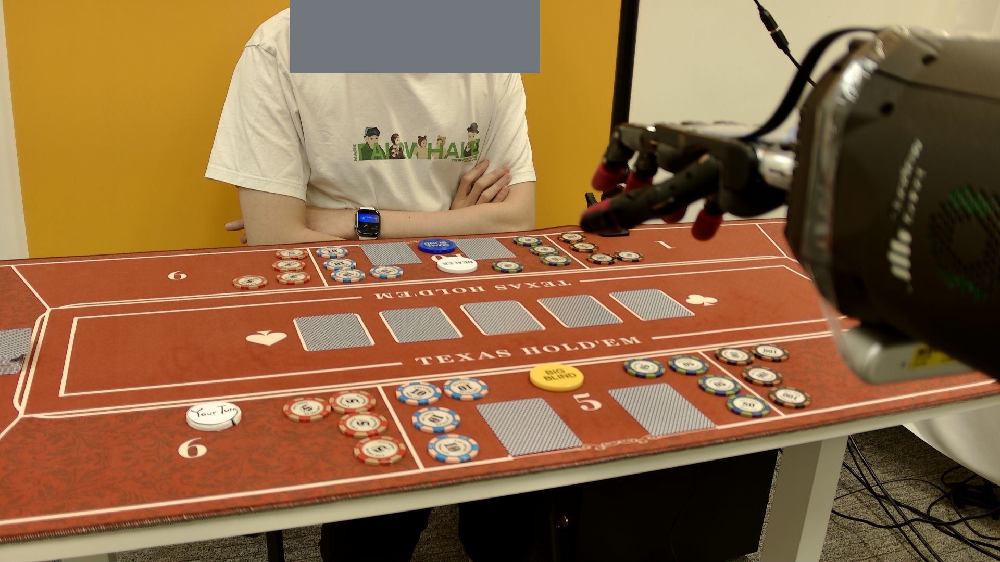
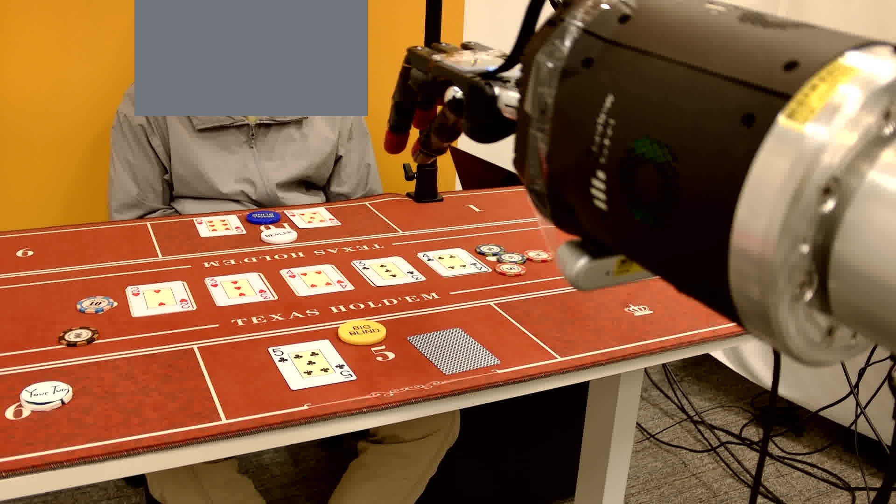

DexHoldem Playing Texas Hold'em with Dexterous Embodied System
- 1,470
- teleoperated demonstrations
- 14
- Texas Hold'em style primitives
- 36
- agentic perception problems
- 3
- system-level case studies
Abstract
We introduce DexHoldem, a real-world benchmark for dexterous hand embodied systems built around Texas Hold'em-style tabletop interaction. DexHoldem includes 1,470 teleoperated demonstrations across 14 card and chip action primitives for policy training and evaluation, along with a 36-problem perception bench that tests an embodied agent's ability to parse turn gates, cards, chips, bets, outcomes, and robot activity from table and robot scene observations. On the current benchmark, the best policy achieves 61.2% task completion and 47.5% scene-preserving success; the best perceiver scores 66.8% field-wise accuracy (GPT-5.5) while strict problem-level exact match remains at 34.3% (Opus 4.7). We further present three full-system case studies that close the perception-to-action loop on a physical table, revealing how recovery, human-help requests, and repeated primitive dispatches compound during real dexterous play.

Benchmark Scope
Texas Hold'em tabletop interaction naturally couples the three capabilities DexHoldem measures: cards and chips demand dexterous multi-finger primitives (policy bench), the evolving game state—turn gates, bets, hands, outcomes—must be recovered from raw scene observations (perception bench), and a full hand of play requires the agent to perceive the scene, maintain game-state memory, reason over state and robot activity to select an action, and dispatch dexterous primitives for execution (system-level evaluation). Click below for details:
Policy Bench
1,470 teleoperated demonstrations across 14 card and chip action primitives for training and evaluating dexterous manipulation policies.
02Perception Bench
36 real deployment problems evaluating an embodied agent's ability to parse turn gates, cards, chips, bets, outcomes, and robot activity from scene observations.
03System-level Evaluation
Three case studies closing the perception-to-action loop on a physical table, exposing real failure modes during dexterous play.
Embodied System
The DexHoldem embodied system is implemented as a skill for coding-agent harnesses (Claude Code, Gemini CLI, Codex), each binding its natively supported vision-language model. The skill follows a perceive-route-execute loop: the agent parses the current table image into structured game state (turn gate, cards, chips, bets, robot activity), a deterministic router loads persistent game-state memory—including verified hole cards and multi-step action progress—validates the parsed fields, enforces safety limits, and selects an action class (wait, view card, push/pull chips, show hand, or request human help). The selected action is translated into instruction codes that route the dexterous policy model for physical execution.

Agentic Perception Bench
Each of the 36 perception problems is a snapshot from a real system-level deployment trajectory. The perceiver receives the current agent-view capture together with all predecessor states as context, and must output a structured state covering 8 fields: loop stage, turn ownership, blind position, community cards, chip inventories, current bets, and outcome. See an example problem below and full details here.

Results
We report three sets of results on this page: (1) aggregate policy results scored by a four-level rubric over 80 real-world primitive rollouts per model, (2) per-perceiver accuracy on the 36-problem perception bench with strict problem-level exact match and field-wise diagnostics, and (3) RDT pretraining data-scaling analysis. See the full results page for system-level case studies and detailed analysis.
| Policy | Family | SP | DC | TF | DF | SPSR | TCR |
|---|---|---|---|---|---|---|---|
| π0.5 | Pretrained | 38 | 11 | 31 | 0 | ||
| π0 | Pretrained | 38 | 8 | 33 | 1 | ||
| RDT | Pretrained | 24 | 13 | 40 | 3 | ||
| DP (DINO) | From-scratch | 21 | 8 | 48 | 3 | ||
| DP-Transformer | From-scratch | 11 | 5 | 46 | 18 | ||
| RDT-small | From-scratch | 11 | 3 | 59 | 7 | ||
| ACT | From-scratch | 8 | 4 | 67 | 1 | ||
| BAKU | From-scratch | 5 | 5 | 67 | 3 | ||
| DP-UNet | From-scratch | 1 | 0 | 79 | 0 |
| Harness | Perceiver | Overall | LS | TO | BI | CC | CB | RCI | OCI | SO | Avg |
|---|---|---|---|---|---|---|---|---|---|---|---|
| Codex | GPT 5.5 | 31.5 | 72.2 | 80.6 | 100.0 | 61.5 | 45.8 | 62.5 | 35.4 | 76.2 | 66.8 |
| Codex | GPT 5.4 | 31.5 | 65.7 | 93.5 | 100.0 | 23.1 | 31.2 | 56.2 | 18.8 | 47.6 | 54.5 |
| Codex | GPT 5.4 mini | 25.9 | 56.5 | 94.4 | 99.1 | 33.3 | 14.6 | 29.2 | 18.8 | 47.6 | 49.2 |
| Claude Code | Opus 4.7 | 34.3 | 43.5 | 93.5 | 100.0 | 43.6 | 31.2 | 37.5 | 43.8 | 0.0 | 49.1 |
| Claude Code | Sonnet 4.6 | 25.0 | 46.3 | 88.0 | 100.0 | 23.1 | 10.4 | 29.2 | 22.9 | 14.3 | 41.8 |
| Claude Code | Haiku 4.5 | 13.9 | 47.2 | 68.5 | 91.7 | 35.9 | 12.5 | 25.0 | 18.8 | 0.0 | 37.4 |
| Gemini CLI | Gemini 3 Flash | 20.4 | 63.9 | 77.8 | 100.0 | 28.2 | 18.8 | 29.2 | 22.9 | 71.4 | 51.5 |
| Gemini CLI | Gemini 3.1 Flash L. | 10.2 | 27.8 | 73.1 | 94.4 | 28.2 | 12.5 | 22.9 | 14.6 | 0.0 | 34.2 |
Notes: each sub-field column (LS, TO, BI, CC, CB, RCI, OCI, SO) is scored only on the subset of problems where that field applies — for example, SO is evaluated only on showdown problems, so a 0% SO does not prevent a model from achieving a higher Overall score. Overall requires exact match across all applicable fields per problem. Accuracy may vary due to harness version. Current results are evaluated at May 7, 2026.


Demo Categories & Release
DexHoldem demos include representative dataset camera triplets and primitive-level policy benchmark rollouts. The embedded block below is the policy-demo preview; each category also has a dedicated page.
Policy Bench Rollouts
Compressed real-world demos with model, task, and outcome labels.
Source recordings are 4K 60fps MOV files. The hosted videos are 960x540 H.264 MP4 previews with original filenames preserved for traceability.

Benchmark Data
Data in Benchmark
1,470 physical policy demonstrations plus 36 agent-state problems with ground-truth state, route, and action labels.

Policy Evaluation
Policy Evaluation
Physical primitive trials compare pi-series, RDT, diffusion-policy, ACT, and BAKU policies under SPSR and TCR.

Agent Evaluation
Agent Evaluation
Agentic perception results over 36 tabletop states quantify strict state recovery and field-wise bottlenecks.

System Evaluation
System-Level Evaluation
Three GPT 5.5 + pi0 hand-level case studies expose wait branches, recovery dispatches, human-help, and primitive counters.
Resources